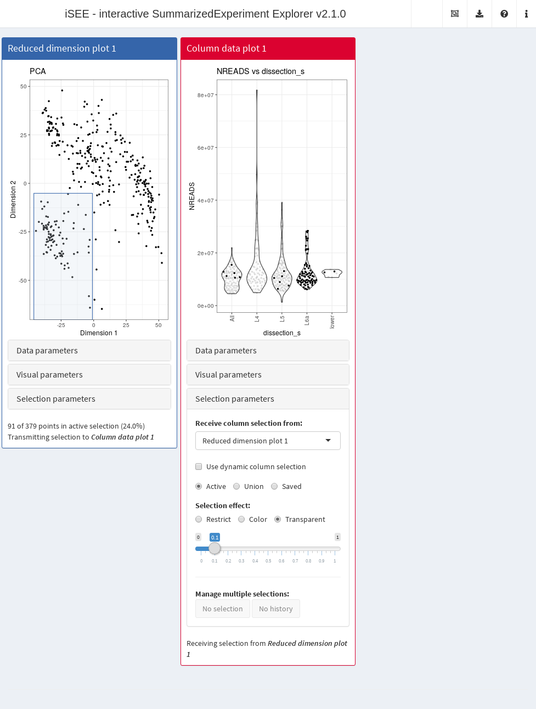
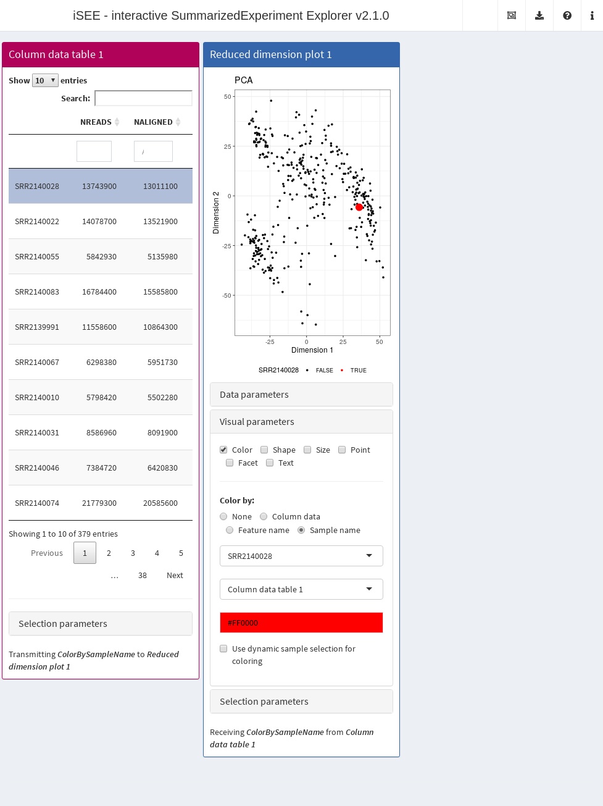
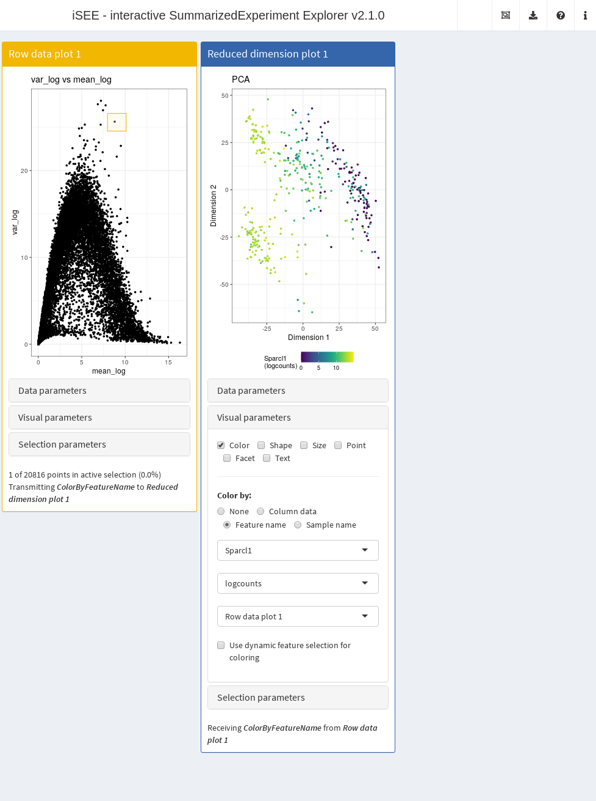

Sharing information across iSEE panels
Kevin Rue-Albrecht
MRC WIMM Centre for Computational Biology, University of Oxford, Oxford, OX3 9DS, UKkevinrue67@gmail.com
Federico Marini
Institute of Medical Biostatistics, Epidemiology and Informatics (IMBEI), Mainzmarinif@uni-mainz.de
Charlotte Soneson
Friedrich Miescher Institute for Biomedical Research, Basel, Switzerlandcharlottesoneson@gmail.com
Aaron Lun
infinite.monkeys.with.keyboards@gmail.com18 October 2020
Source:vignettes/links.Rmd
links.RmdCompiled date: 2020-10-18
Last edited: 2020-04-20
License: MIT + file LICENSE

Introduction
One of iSEE’s main features is the ability to share information between panels. This facilitates deeper exploration of a dataset by allowing users to visualize relationships across multiple metrics. iSEE() currently supports three modes of information sharing between panels - multiple selections, single selections and dynamic selections - which are demonstrated in this vignette using the Allen dataset processed in the previous vignette.
Multiple selections
Basic use
As its name suggests, this involves selecting multiple features or samples in one panel and transmitting their identities to another panel to affect the visualization. To demonstrate, we will create a small app involving a single reduced dimension plot and a column metadata plot.
library(iSEE) app <- iSEE(sce, initial=list( ReducedDimensionPlot(), ColumnDataPlot() ))

We indicate that we want one panel to “receive” a multiple selection from another panel. This is done by specifying the selection source (for samples/columns in this case, given the nature of the two panels) and indicating that the column data plot is to receive a selection from the reduced dimension plot.

We can click-and-drag to select multiple points in the reduced dimension plot with a brush, which highlights those same points in the column data plot. This enables users to easily explore relationships between different visualizations in the iSEE() interface.

Alternatively, a single click will lay down lasso waypoints for a non-rectangular selection. Once closed, the points in the lasso will be transmitted to the column data plot.

Selection effects
Transparency is the default aesthetic effect used to distinguish points in multiple selections in receiving plots. Alternatively, we may use color:

Another option is to restrict the receiving plot so that it only shows the points in the multiple selection. This effectively “gates” the dataset on the selection in the reduced dimension plot, analogous to identification populations of interest in flow cytometry studies. Indeed, this gating process can be repeated as many times as desired; a multiple selection could made on the column data plot and transmitted to another panel, and so on. (See this mass cytometry tour for an example.)

Of course, not all receiving panels need to be plots. If we transmit a multiple selection to a column data table, the effect is to subset the rows of the table corresponding to the selected points.

As an aside, it is equally possible for a table to transmit a multiple selection to other panels. This is achieved using the search fields to subset the dataset to the desired selection.

Saving selections
In certain panels (usually plots), multiple selections can be saved to form disjoint selections. Receiving plots can then choose to respond to the union of all selections, just the active selection, or one of the saved selections. For example, here the column data plot is responding to the union of all selections.

The saved selection history operates on a first-in-last-out basis. Upon saving, a snapshot is taken of the current “active” selection, i.e., the brush or lasso that is just created. Deletion will only operate on the last saved selection.
Single selections
Another mode of information sharing involves transmitting a selection of a single feature or sample. This allows users to conveniently direct other panels to focus on a feature or sample of interest. For example, we can transmit a single selection from a row data table to a reduced dimension plot, instructing the latter to color points by the expression of the chosen feature.

The same approach can be used to control what is plotted on a feature assay plot. Clicking on a different row of the table will directly change the axes (in this case, the y-axis) of the plot, allowing the user to synchronise different aspects of the iSEE() interface to whatever is currently of interest.

We can also perform single selections on sample identities. In the example below, the reduced dimension plot highlights the location of the sample chosen in the column data table. This is useful for checking the behavior of specific samples of interest, e.g., during quality control.

Furthermore, it is possible to transmit single selections from a plot using brushes or lassos. If the brush/lasso contains multiple points, one of them is arbitrarily chosen for the purposes of obtaining a single selection. Below, we select a single highly variable gene to examine its distribution of expression values across the reduced dimension plot.

Dynamic selections
Most panels will have an option to dynamically change the choice of transmitting panel according to the last active selection in the app. This allows users to, for example, simply brush on any plot in the app and have all participating receiving panels immediately use that selection without requiring manual resetting of the transmitter. To illustrate, let’s set up an instance with three different plots that all represent points as samples.

Notice how we have checked the dynamic source selection option in the selection parameter box for all panels. This means that, upon making a selection in any one of the plots, all of the other plots will automatically respond as if they had been manually set to receive a transmission from that plot.

The same logic applies for some parameters that respond to single selections. This allows a panel to respond to an appropriate single selection from any other panel in the interface, without requiring the user to manually set the relationship between panels. In the example below, users can easily define the y-axis of the feature assay plot from a selected row in the row data table or from a selected single point in the row data plot.

Session Info
sessionInfo() #> R version 4.0.3 Patched (2020-10-13 r79342) #> Platform: x86_64-pc-linux-gnu (64-bit) #> Running under: Ubuntu 20.04.1 LTS #> #> Matrix products: default #> BLAS/LAPACK: /usr/lib/x86_64-linux-gnu/openblas-pthread/libopenblasp-r0.3.8.so #> #> locale: #> [1] LC_CTYPE=en_US.UTF-8 LC_NUMERIC=C #> [3] LC_TIME=en_US.UTF-8 LC_COLLATE=en_US.UTF-8 #> [5] LC_MONETARY=en_US.UTF-8 LC_MESSAGES=C #> [7] LC_PAPER=en_US.UTF-8 LC_NAME=C #> [9] LC_ADDRESS=C LC_TELEPHONE=C #> [11] LC_MEASUREMENT=en_US.UTF-8 LC_IDENTIFICATION=C #> #> attached base packages: #> [1] parallel stats4 stats graphics grDevices utils datasets #> [8] methods base #> #> other attached packages: #> [1] iSEE_2.1.26 SingleCellExperiment_1.11.8 #> [3] SummarizedExperiment_1.19.9 Biobase_2.49.1 #> [5] GenomicRanges_1.41.6 GenomeInfoDb_1.25.11 #> [7] IRanges_2.23.10 S4Vectors_0.27.14 #> [9] BiocGenerics_0.35.4 MatrixGenerics_1.1.7 #> [11] matrixStats_0.57.0 BiocStyle_2.17.1 #> #> loaded via a namespace (and not attached): #> [1] nlme_3.1-149 bitops_1.0-6 fs_1.5.0 #> [4] RColorBrewer_1.1-2 rprojroot_1.3-2 tools_4.0.3 #> [7] backports_1.1.10 R6_2.4.1 DT_0.15 #> [10] vipor_0.4.5 mgcv_1.8-33 colorspace_1.4-1 #> [13] GetoptLong_1.0.3 tidyselect_1.1.0 compiler_4.0.3 #> [16] textshaping_0.1.2 shinyjs_2.0.0 desc_1.2.0 #> [19] DelayedArray_0.15.16 colourpicker_1.1.0 bookdown_0.20 #> [22] scales_1.1.1 pkgdown_1.6.1 systemfonts_0.3.2 #> [25] stringr_1.4.0 digest_0.6.25 rmarkdown_2.4 #> [28] XVector_0.29.3 pkgconfig_2.0.3 htmltools_0.5.0 #> [31] fastmap_1.0.1 htmlwidgets_1.5.2 rlang_0.4.8 #> [34] GlobalOptions_0.1.2 shiny_1.5.0 shape_1.4.5 #> [37] generics_0.0.2 jsonlite_1.7.1 dplyr_1.0.2 #> [40] RCurl_1.98-1.2 magrittr_1.5 GenomeInfoDbData_1.2.4 #> [43] Matrix_1.2-18 Rcpp_1.0.5 munsell_0.5.0 #> [46] lifecycle_0.2.0 stringi_1.5.3 yaml_2.2.1 #> [49] rintrojs_0.2.2 zlibbioc_1.35.0 grid_4.0.3 #> [52] promises_1.1.1 ggrepel_0.8.2 shinydashboard_0.7.1 #> [55] crayon_1.3.4 miniUI_0.1.1.1 lattice_0.20-41 #> [58] splines_4.0.3 circlize_0.4.10 knitr_1.30 #> [61] ComplexHeatmap_2.5.6 pillar_1.4.6 igraph_1.2.6 #> [64] rjson_0.2.20 glue_1.4.2 evaluate_0.14 #> [67] BiocManager_1.30.10 png_0.1-7 vctrs_0.3.4 #> [70] httpuv_1.5.4 gtable_0.3.0 purrr_0.3.4 #> [73] clue_0.3-57 assertthat_0.2.1 ggplot2_3.3.2 #> [76] xfun_0.18 mime_0.9 xtable_1.8-4 #> [79] later_1.1.0.1 viridisLite_0.3.0 ragg_0.4.0 #> [82] tibble_3.0.4 memoise_1.1.0 cluster_2.1.0 #> [85] shinyWidgets_0.5.4 ellipsis_0.3.1 shinyAce_0.4.1